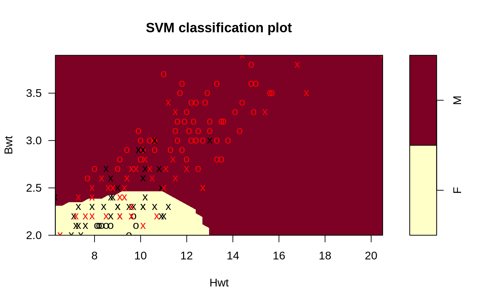
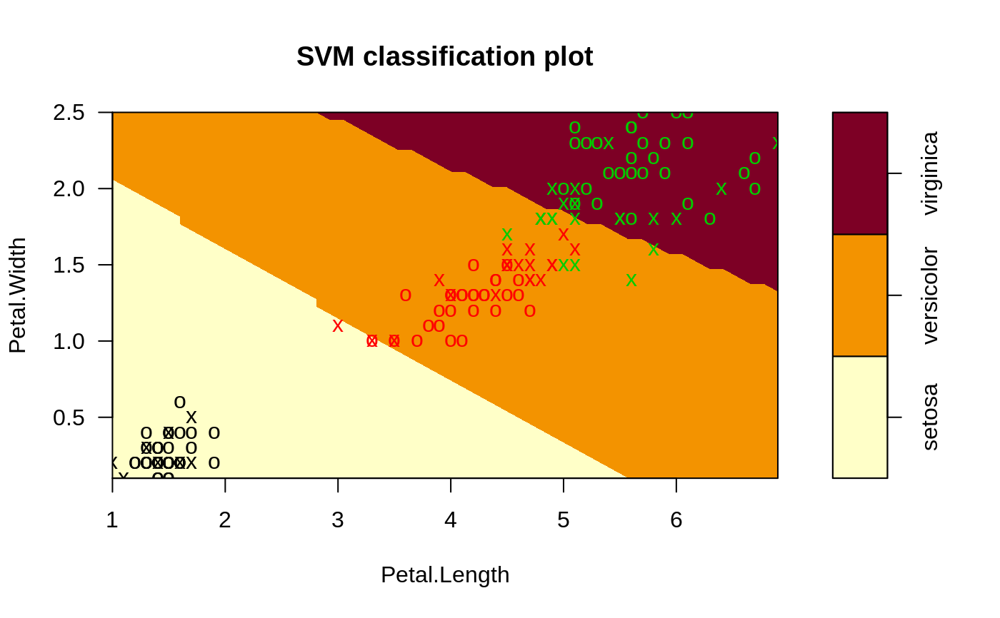
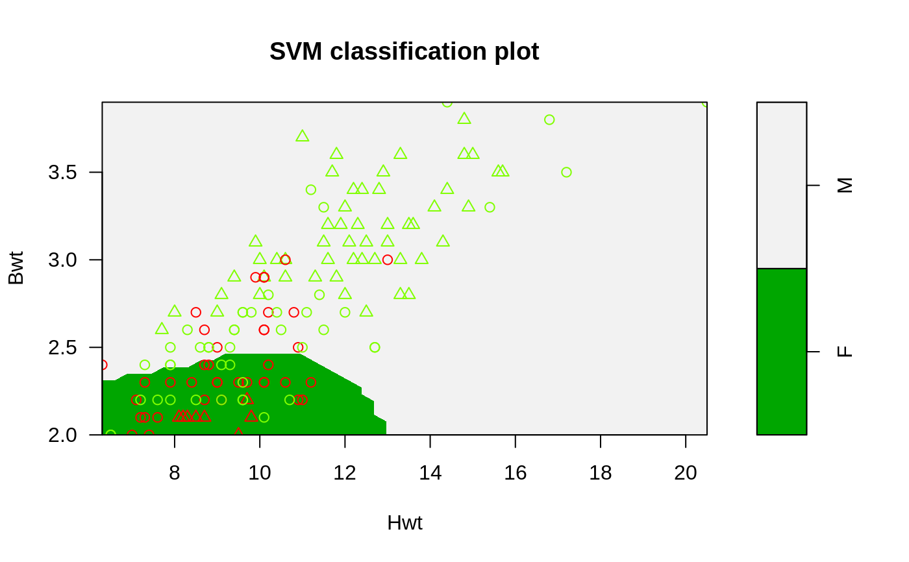

plot.svm.RdGenerates a scatter plot of the input data of a svm fit for
classification models by highlighting the classes and support
vectors. Optionally, draws a filled contour plot of the class regions.
# S3 method for svm plot(x, data, formula, fill = TRUE, grid = 50, slice = list(), symbolPalette = palette(), svSymbol = "x", dataSymbol = "o", ...)
| x | An object of class |
|---|---|
| data | data to visualize. Should be the same used for fitting. |
| formula | formula selecting the visualized two dimensions. Only needed if more than two input variables are used. |
| fill | switch indicating whether a contour plot for the class regions should be added. |
| grid | granularity for the contour plot. |
| slice | a list of named values for the dimensions held constant (only needed if more than two variables are used). The defaults for unspecified dimensions are 0 (for numeric variables) and the first level (for factors). Factor levels can either be specified as factors or character vectors of length 1. |
| symbolPalette | Color palette used for the class the data points and support vectors belong to. |
| svSymbol | Symbol used for support vectors. |
| dataSymbol | Symbol used for data points (other than support vectors). |
| ... | additional graphics parameters passed to
|
## more than two variables: fix 2 dimensions data(iris) m2 <- svm(Species~., data = iris) plot(m2, iris, Petal.Width ~ Petal.Length, slice = list(Sepal.Width = 3, Sepal.Length = 4))## plot with custom symbols and colors plot(m, cats, svSymbol = 1, dataSymbol = 2, symbolPalette = rainbow(4), color.palette = terrain.colors)